Readme
Based on materials contained in the first 5 topics of slide decks and labs. It is worth 50% of your overall grade for the module.
Similar(ish) Project
In your previous labs, you worked on a Shop project. Your assignment will be similar(ish) to this project but will incorporate more concepts and require you to develop your own algorithms to solve some of the requirements given to you.
The solution to the Shop V5.0 project can be found here.

The responsibility of the Product class is to manage a single product.
The responsibility of the Store class is to manage an ArrayList of Products.
The Assignment
You are tasked with developing a SongifyApp.
This SongifyApp will have five classes:
Artist: The responsibility for this class is to manage a single Artist.
ArtistList: The responsibility for this class is to store and manage ALL the artists entered by the user via the console.
Song: The responsibility for this class is to manage a single Song. Note that a song, in our app, has ONE artist associated with it.
SongList: The responsibility for this class is to store and manage ALL the songs entered by the user via the console.
Driver: The responsibility for this class is to manage the User Interface (UI) i.e. the menu and user input/ouput.
The instructions for developing the app and the above classes are on the following tabs.
Some key points to remember when coding your assignment
You must use the names given for the Classes and Methods; failure to do so will result in reduced marks.
For all variables, methods and classes used, please adhere to the naming standards discussed in class.
Use internal, helper methods (i.e. private access methods) where appropriate. The interface for your class must match the interface given in the assignment brief. Deviating from the interface will result in reduced marks. Note: the interface here refers to the fields, constructors and methods that are visible outside the class.
Your classes and methods should be Javadoc commented.
Don't forget that you can get IntelliJ to generate methods such as getters, setters, constructors and toString. It is a good idea to generate these methods and then add the additional requirements (such as validation) manually. This will free up some time for concentrating on other areas of the assignment.
There should be absolutely NO System.out.println or Scanner reads in any class except for Driver. If you have any such interaction with the user in any class other than Driver, you will loose marks. Instead, you should be returning information back to Driver to print it. Or passing information read in Driver to other classes via method parameters.
Artist class
The UML for the Artist class is here:
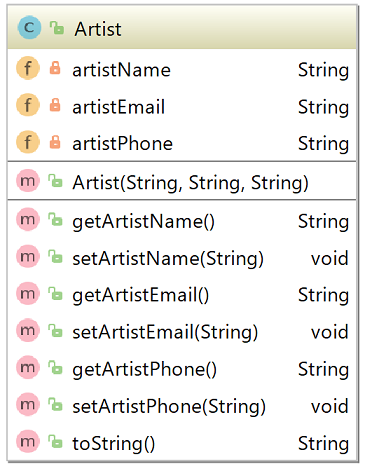
The responsibility for this class is to manage a single Artist.
Fields
There are three private fields in the Artist class. The validation on these fields is as follows:
artistName: The artist name is maximum 30 characters.
artistEmail: must contain a @ and a .. If it doesn't, store "invalid format email".
artistPhone: should only contain numbers. If it contains any characters other than numbers, store "unknown".
Constructor
There is one constructor that should have the same method signature as the diagram above. The constructor should enforce the validation rules outlined for each field above.
Methods (getters and setters)
Each of the above fields will have a getter and a setter. The setters should adhere to the validation rules outlined above. Remember that a setter should not apply a default value i.e. if an invalid email is entered, do not overwrite the existing stored email with "invalid format email".
Methods (toString)
Your toString should adhere to the following format:
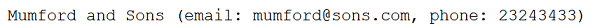
ArtistList class
The UML for the ArtistList class is here:
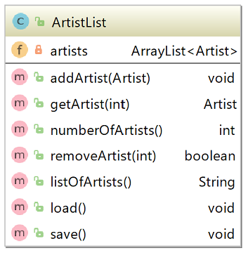
Fields
There is one private field in the ArtistList class, artists. This is an ArrayList of Artist. There is no validation on this field. It should be instantiated at declaration time.
Constructor
We will use the default constructor for this class (no need to code it). For this reason, there is no constructor shown in the diagram above.
Methods (getters and setters)
There are no getter or setter for the instance field artists. Instead, we will use the below methods to manage the ArrayList.
Methods (addArtist)
This method will add an Artist object (passed as a parameter) to the ArrayList artists. There is no validation in this method.
Methods (getArtist)
This method will return an Artist object at the location index, which is passed as a paramter. There is some validation in this method:
- Check that the passed index exists in the ArrayList, before accessing the ArrayList.
- If the passed index is not valid, return null.
Methods (numberOfArtists)
This method returns the number of Artist objects stored in the ArrayList artists.
Methods (removeArtist)
This method removes an Artist object at the location index, which is passed as a paramter. There is some validation in this method (same as in getArtist method above):
- Check that the passed index exists in the ArrayList, before accessing the ArrayList.
- If the passed index is not valid, return false.
Methods (listOfArtists)
This method is similar-ish to a toString.
It builds (and returns) a String of all Artist objects in the ArrayList. Each object is on a new line. The beginning of the line has the index number of the object in the ArrayList i.e.:
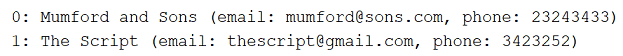
If there are no artists in the ArrayList, the following message should be returned: There are no artists in the list.
Methods (save)
This method saves all Artist objects from the ArrayList artists to an XML file artists.xml. You can use the xstream component for this (like we did in class) or any approach you wish.
Methods (load)
This method loads all saved Artist objects back into the program (i.e into the ArrayList artists) from the XML file artists.xml. You can use the xstream component for this (like we did in class) or any approach you wish.
Song class
The UML for the Song class is here:
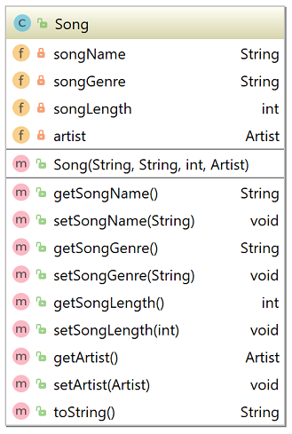
The responsibility for this class is to manage a single Song.
Fields
There are four private fields in the Song class. The validation on these fields is as follows:
songName: The song name is maximum 30 characters.
songGenre: must be one of the following:
- Rock
- Pop
- Blues
- Rap
- Dance
- Classical
- unknown (if any of the above hasn't be entered by the user)
songLength: stored as seconds. Must be between 10 and 1,200 inclusive. If it is outside of this range, a default of 0 is applied.
artist: as we cannot have a null value stored in this variable, we will do the following validation on it:
- if the artist is not null, store this value.
- if the artist IS null, create a new artist object with an artist name of unknown, an email of invalid format email, and a phone of unknown.
Constructor
There is one constructor that should have the same method signature as the diagram above. The constructor should enforce the validation rules outlined for each field above.
Methods (getters and setters)
Each of the above fields will have a getter and a setter. The setters should adhere to the validation rules outlined above. Remember that a setter should not apply a default value i.e. if an invalid genre is entered, do not overwrite the existing stored genre with "unknown".
Methods (toString)
Your toString should adhere to the following format:
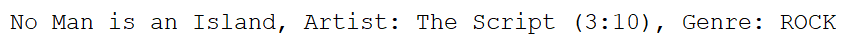
Note how the song length is not displayed in seconds...it is converted to minutes and seconds. Hint: use modulo operator (%) for this.
SongList Class
The UML for the SongList class is here:
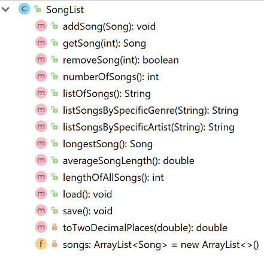
Note: There are a lot of similarities, structure-wise, between ArtistList and SongList.
Fields
There is one private field in the SongList class, songs. This is an ArrayList of Songs. There is no validation on this field. It should be instantiated at declaration time.
Constructor
We will use the default constructor for this class (no need to code it). For this reason, there is no constructor shown in the diagram above.
Methods (getters and setters)
There are no getter or setter for the instance field songs. Instead, we will use the below methods to manage the ArrayList.
Methods (addSong)
This method will add a Song object (passed as a parameter) to the ArrayList songs. There is no validation in this method.
Methods (getSong)
This method will return an Song object at the location index, which is passed as a paramter. There is some validation in this method:
- Check that the passed index exists in the ArrayList, before accessing the ArrayList.
- If the passed index is not valid, return null.
Methods (removeSong)
This method removes a Song object at the location index, which is passed as a paramter. There is some validation in this method (same as in getArtist method in the ArtistList class):
- Check that the passed index exists in the ArrayList, before accessing the ArrayList.
- If the passed index is not valid, return false.
Methods (numberOfSongs)
This method returns the number of Song objects stored in the ArrayList songs.
Methods (listOfSongs)
This method is similar-ish to a toString.
It builds (and returns) a String of all Song objects in the ArrayList. Each object is on a new line. The beginning of the line has the index number of the object in the ArrayList i.e.:
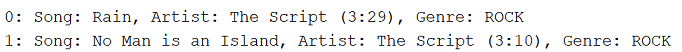
If there are no songs in the ArrayList, the following message should be returned: There are no songs in the list.
Methods (listSongsBySpecificGenre)
This method builds (and returns) a String of all Song objects in the ArrayList whose genre matches the one passed as a parameter. Each object is on a new line i.e.:
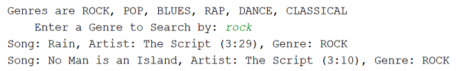
If there are no songs in the ArrayList, the following message should be returned: There are no songs stored in the list.
If there are songs in the ArrayList but none of them have the genre entered by the user (i.e. passed as a parameter), then the following message should be returned: "There are no songs with the genre: " + genre
Note: cater for case sensitivity in your searches i.e. Rock, ROCK, rock should be the same for search purposes (see screen shot above).
Methods (listSongsBySpecificArtist)
This method builds (and returns) a String of all Song objects in the ArrayList whose artistName matches the one passed as a parameter. Each object is on a new line i.e.:
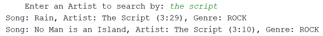
If there are no songs in the ArrayList, the following message should be returned: There are no songs stored in the list.
If there are songs in the ArrayList but none of them are by the artistName entered by the user (i.e. passed as a parameter), then the following message should be returned: "There are no songs for the artist: " + artist
Remember to cater for case-sensitive searches.
Methods (longestSong)
This method returns the Song object that has the longest songLength in the ArrayList. If there are no songs stored in the ArrayList, null should be returned.
Methods (averageSongLength)
This method returns average songLength in the ArrayList.
If there are no songs stored in the ArrayList, zero should be returned.
Hint: avoid a divide by zero exception in this method by only dividing if there are Songs stored in the ArrayList.
Methods (lengthOfAllSongs)
This method returns a running total of the songLength for all Songs stored in the ArrayList. If there are no Songs stored, zero should be returned.
Methods (save)
This method saves all Song objects from the ArrayList songs to an XML file songs.xml. You can use the xstream component for this (like we did in class) or any approach you wish.
Methods (load)
This method loads all saved Song objects back into the program (i.e into the ArrayList songs) from the XML file songs.xml. You can use the xstream component for this (like we did in class) or any approach you wish.
Driver class
The UML for the Driver class is here:
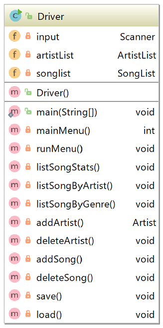
The responsibility of this class is to run the app and perform I/O with the user. It is the only class that should have:
- System.out.print statements
- Scanner objects defined.
Fields
There are three private fields in the Driver class:
- input: This is an object of the Scanner class.
- artistList: This is an object of the ArtistList class.
- songList: This is an object of the SongList class.
Instantiate each of these fields at variable declaration time. Also, there is no validation on any of these fields.
main method
The main method has one line of code:
new Driver();Constructor
We will write a default constructor for this class. There is one line of code in this method:
runMenu();Menu Displayed
Using the same approach adopted when deveoping the Shop projets, the following menu is continually displayed to the user:
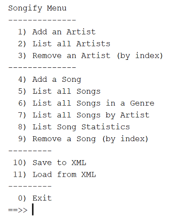
Note that the mainMenu() method displays the above menu and returns the user choice. The runMenu method is the one that contains the switch statement that processes the user choice.
Option 1 - Add an Artist
Create an addArtist() method in Driver. This method asks the user to enter the artist name, email and phone number. The entered Artist is then stored in the ArrayList of Artists (i.e. in the ArtistList class).
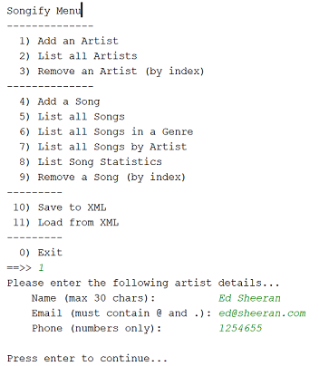
Option 2 - List all Artists
Calls the listOfArtists method in the artistList class. The String that is returned is printed to the console.
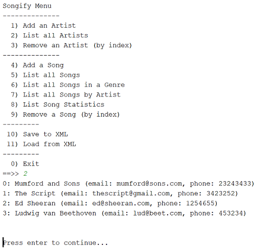
Option 3 - Remove an Artist (by index)
Create a deleteArtist() method in Driver. This method lists all the artists (hint: we used this method in option 2). If there are:
artists in the list, ask the user to enter the index number of the artist to delete. Then, provided that the index number is valid, the Artist is deleted from the list.
no artists in the list, the following message is displayed: There is no artist for this index number.
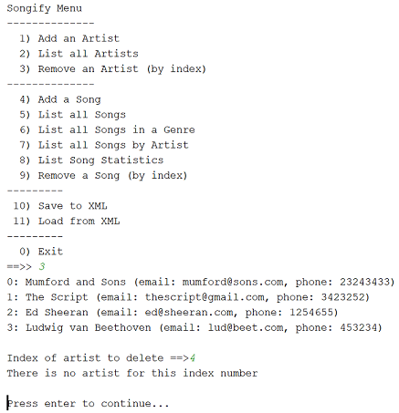
Option 4 - Add a song
Create an addSong() method in Driver.
This method first asks the user to enter the song name, genre, length of the song in minutes and length of the song in seconds.
Then the list of artists are displayed and the user selects the index number for the artist that wrote the song. If there are no artists in the system, the user should now be asked to enter the artist details.
The song is then stored in the ArrayList of Songs (i.e. in the SongList class).
Note: you will need to store the length of the song in seconds, so you will have to convert the minutes and seconds into one seconds value.
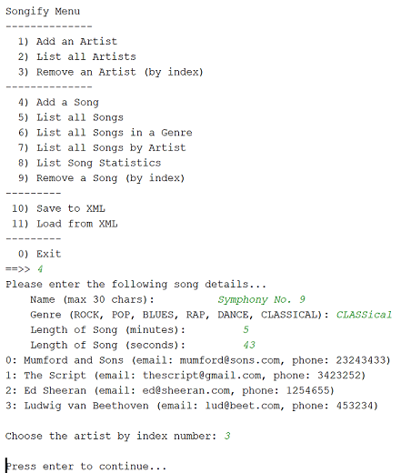
Option 5 - List all songs
Calls the listOfSongs method in the songList class. The String that is returned is printed to the console.
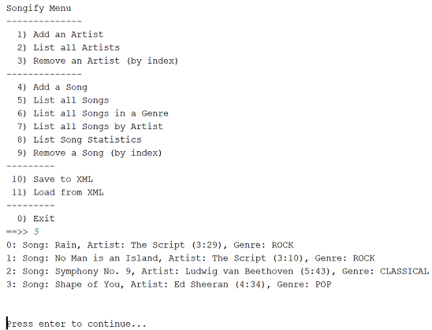
Option 6 - List all songs in a genre
Create a listSongByGenre() method in Driver. The method should ask the user to enter the genre (i.e. ROCK, POP, BLUES, RAP, DANCE, CLASSICAL). It then calls the listSongsBySpecificGenre method in the SongList class and prints the returned String to the console.
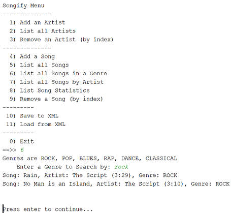
Option 7 - List all songs by artist
Create a listSongByArtist() method in Driver. The method should ask the user to enter the name of the artist to search by. It then calls the listSongsBySpecificArtist method in the SongList class and prints the returned String to the console.
Note: partial names should return results i.e. Joh should return John Flynn and Johanna.
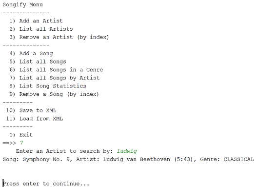
Option 8 - List song statistics
Create a listSongStats() method in Driver.
This method should print out the average song length and the length of all songs (these methods are written in the SongList class). The output should be converted from seconds to be of the format (mm:ss).
Finally, the details of the longest song should be displayed.
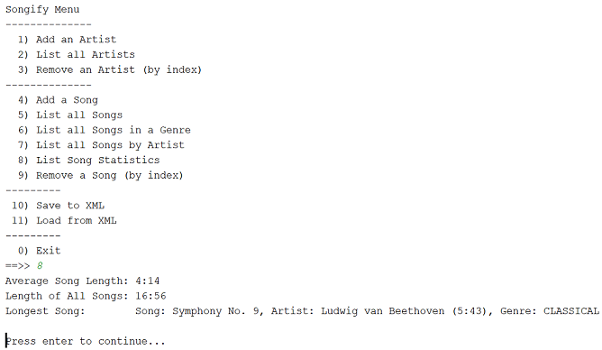
Option 9 - Remove a song (by index)
Create a deleteSong() method in Driver. This method lists all the songs (hint: we used this method in option 5). If there are:
songs in the list, ask the user to enter the index number of the song to delete. Then, provided that the index number is valid, the Song is deleted from the list.
no songs in the list, the following message is displayed: There is no song for this index number.
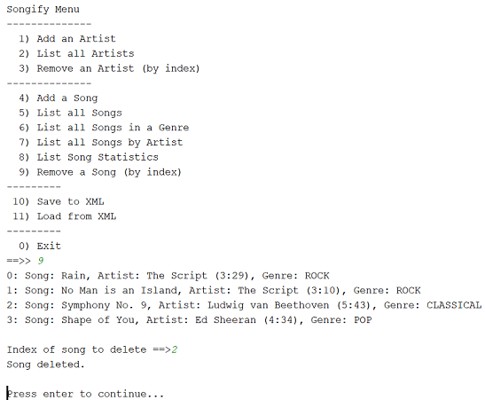
Option 10 - Save to XML
This method will save both lists (the artists and the songs) to an XML file.
Option 11 - Load from XML
This method will load both lists (the artists and the songs) form the XML file that was created in Option 10.
Option 0 - Exit
This option exits the application.
Formatting decimal output
If you want to truncate a double field to two decimal places, you can adopt this approach (i.e. when calculating the average song length).
- Add the following helper method to the SongList class:
private double toTwoDecimalPlaces(double num){
return (int) (num *100 ) /100.0;
}- This method:
- takes in a parameter (called num) e.g. 45.76899765
- multiplies it by 100 e.g. 4576.899765
- casts it as an int e.g. 4576
- divides it by 100 e..g 45.76
- and returns this value truncated to two decimal places.
- Given the following sample code:
public double calculateSomething(){
return ( value / anotherValue );
}- We can use the toTwoDecimalPlaces method to truncate the result to two decimal places:
//When returning the result of a calculation, we want to call our
//new toTwoDecimalPlaces method to truncate the result to two decimal places:
public double calculateSomething(){
return toTwoDecimalPlaces( value / anotherValue );
}You can apply this approach to the averageSongLength method in the SongList class...the returned result can be truncated to two decimal places.
JUnit
NOTE: YOU DO NOT HAVE TO DO THIS STEP IF YOU DON'T WANT TO. THERE ARE NO ADDITIONAL MARKS IN THE MARKING SCHEME FOR DOING THIS. HOWEVER, IT WILL HELP YOU IDENTIFY AND FIX BUGS IN YOUR CODE, THEREBY INCREASING YOUR GRADE.
For correcting your assignments, we have written four automated test classes:
- SongTest: This class exhaustively tests the methods in the Song class.
- ArtistTest: This class exhaustively tests the methods in the Artist class.
- SongListTest: This class tests all methods, except load and store in the SongList class.
- ArtistListTest: This class tests all methods, except load and store in the ArtistList class
We will be running these classes over your submitted assignment and correcting based on the results of the tests. We are releasing them to you so that, prior to submitting your work, you can pre-correct your assignment and make changes / fix your code based on the output of the tests.
The following steps will show you how to incorporate these into your assignment.
Creating a Test Folder
In your IntelliJ project, right click on your project name. When the context menu appears, select New --> Directory. Call the new directory test.
Note that the src folder is blue in colour and the test one is grey:

We need to 'mark' this directory as a test source folder. To do this, right click on the new test folder and when the context menu appears, select Mark Directory as --> Test Sources Root:

Your test directory should now be green in colour.
Creating a test class
Right click on the test folder and choose New --> Java Class. Give the class the name, SongTest.
Delete any generated code in your new class and paste this code into it instead.
You will notice that a lot of errors exist in relation to the JUnit imports annotations and the assert methods:

We need to add JUnit to our classpath so that these imports and methods can be recognised. To do this, click on one of the JUnit imports that is causing an error. Click on the red lightbulb that appears and then select Add Junit4 to Classpath:

Your test class should have no syntax errors now (assuming you have writen all the methods in the class and followed all of our naming laid out in the assignment).
Running your test class
To run the test class, right click on the test folder and select Run --> All Tests.
A new window will appear, reporting the results of the tests. In our case here, all our tests passed:

If you have failing tests, the output could look something like this:

Fixing Errors
If your test class is not compiling i.e. has syntax errors, resist the urge to change the code in the test class. Instead return to your classes and update your code. Typical things that could be wrong in your code include:
- class name different (check case sensitivity)
- method names different (check case sensitivity)
- missing methods in your code
- wrong return types in your methods
- etc....
If your test class is compiling but is failing on tests, maybe there is an issue with:
validation e.g.:
- validation not included as speced
- validation only done at constructor level
- only the if part is included (no else)
- maybe you are checking different values to the test class e.g. > 0 instead of >= 0
- etc.
requirements missed e.g.
- maybe you forgot to include all the requirements for a specific method e.g. in the list methods, you typically should have three return statements...maybe you don't have them all included.
general bugs e.g.
- maybe you are updating the wrong field by accident
- maybe you are forgetting to update something
- so many different things can go wrong here!
As you make changes to your code, keep running the tests to see your progress.
Remaining test classes
Follow the same procedure as above to include the following three test classes:
Note: there is no automated test class for Driver.java as this one uses the console for input (i.e. keeps interrupting the program running).
Submitting your assignment
When you are ready to submit your assignment:
Rename your project folder using the naming convention firstname_surname e.g. siobhan_drohan.
Zip this folder ensuring that it is called firstname_surname.zip. No WINRARs please!
The deadline for this assignment is 10 pm Friday 8th March, 2019.
Interviews
As you know, it is compulsory that you are interviewed on your submission in order to demonstrate both Understanding and Authorship.
These interviews will typically take place in labs the week after submission.
The grade for the interview is a multiplier for your assigment grade. Should you fail to show for your interview, you will receive zero, resulting in an overall grade of zero for your submission.
Indicative Marking Scheme
The marking scheme for the assignment is broken into the following:
Artist Class - 8%
Song Class - 7%
ArtistList Class - 15%
SongList Class - 35%
Driver - 25%
Javadoc - 5%
Coding standards, naming, style, etc - 5%
The above totals to 100%.
Extra Credit
Extras - 10% will be available to include extras like including exceptions throughout, robust error handling, etc. This 10% is only available if all other functionalities are attempted and will bring your mark to a maximum of 100%. Good examples of extra credit functionality could be:
to do a cascade delete on the Artist i.e. delete all the songs associated with the artist. If attempting this, you might need to do a bit of research on the .equals() method.
when adding an Artist to a Song, you might have noticed that you had to select an Artist from a list of pre-existing artists. There was no option to allow the user to add a new Artist. Instead, what you could do is allow the user to enter, say, -1 to add a new Artist.
Note: If you are making changes to the functionality, it may be the case that the tests will fail for that particular area. In this case, you are permitted to update the tests to reflect this new functionality, but please include a README with your project to indicate that you have done this.
Interviews
The grade for the interview is a multiplier for your assigment grade. Should you fail to show for your interview, you will receive zero, resulting in an overall grade of zero for your submission.
Use of JUnit when developing your code
If your code passes the JUnit tests provided, this means that you will automatically have 65% (interview permitting!).
Use of the JUnit tests will significantly help you to improve your code. It is worth the effort of getting it up and running and will also be a help to you when we cover it more fully later in the semester. Go for it!